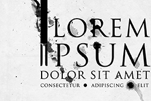

Klik hier om naar de site van Fly Emirates te gaan. Emirates is een luchtvaartmaatschappij uit Dubai in de Verenigde Arabische Emiraten. De maatschappij werd in mei 1985 opgericht door de regering van de Verenigde Arabische Emiraten.
Emirates heeft een zeer snelle groei laten zien. De maatschappij heeft vluchten naar vele bestemmingen in het Midden-Oosten, Azië, Europa, Afrika, Oceanië en Noord-Amerika. Op 25 oktober 1985 werden de eerste vluchten naar India en Pakistan uitgevoerd. Tussen 1987 en 1990 kwamen ook Azië en Europa op de routekaart. Emirates werd op 1 april 1998 aandeelhouder van SriLankan Airlines. De vrachtdivisie van Emirates heet Emirates SkyCargo.
hier om naar de site van Fly Emirates te gaan. Emirates is een luchtvaartmaatschappij uit Dubai in de Verenigde Arabische Emiraten. De maatschappij werd in mei 1985 opgericht door de regering van de Verenigde Arabische Emiraten.
Emirates heeft een zeer snelle groei laten zien. De maatschappij heeft vluchten naar vele bestemmingen in het Midden-Oosten, Azië, Europa, Afrika, Oceanië en Noord-Amerika. Op 25 oktober 1985 werden de eerste vluchten naar India en Pakistan uitgevoerd. Tussen 1987 en 1990 kwamen ook Azië en Europa op de routekaart. Emirates werd op 1 april 1998 aandeelhouder van SriLankan Airlines. De vrachtdivisie van Emirates heet Emirates SkyCargo.
Etiam rhoncus. Maecenas tempus, tellus eget condimentum rhoncus, sem quam semper libero, sit amet adipiscing sem neque sed ipsum. Nam quam nunc, blandit vel, luctus pulvinar, hendrerit id, lorem. Maecenas nec odio et ante tincidunt tempus. Donec vitae sapien ut libero venenatis faucibus. Nullam quis ante. Etiam sit amet orci eget eros faucibus tincidunt. Duis leo. Sed fringilla mauris sit amet nibh. Donec sodales sagittis magna. Sed consequat, leo eget bibendum sodales, augue velit cursus nunc, quis gravida magna mi a libero. Fusce vulputate eleifend sapien. Vestibulum purus quam, scelerisque ut, mollis sed, nonummy id, metus. Nullam accumsan lorem in dui. Cras ultricies mi eu turpis hendrerit fringilla. Vestibulum ante ipsum primis in faucibus orci luctus et ultrices posuere cubilia Curae; In ac dui quis mi consectetuer lacinia.
Nam pretium turpis et arcu. Duis arcu tortor, suscipit eget, imperdiet nec, imperdiet iaculis, ipsum. Sed aliquam ultrices mauris. Integer ante arcu, accumsan a, consectetuer eget, posuere ut, mauris. Praesent adipiscing. Phasellus ullamcorper ipsum rutrum nunc. Nunc nonummy metus. Vestibulum volutpat pretium libero. Cras id dui. Aenean ut eros et nisl sagittis vestibulum. Nullam nulla eros, ultricies sit amet, nonummy id, imperdiet feugiat, pede. Sed lectus. Donec mollis hendrerit risus. Phasellus nec sem in justo pellentesque facilisis. Etiam imperdiet imperdiet orci. Nunc nec neque. Phasellus leo dolor, tempus non, auctor et, hendrerit quis, nisi.